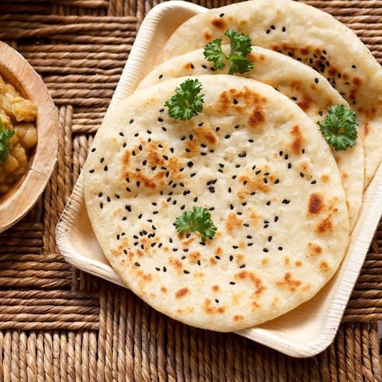

Kulcha is an Indian flatbread made with wheat flour, and it is commonly served as an accompaniment to chickpea curry. The bread is cooked in a tandoor or on a griddle, and it is usually brushed with ghee and served while still hot. Chewy and soft, it is also easily cooked on a traditional tawa, making it accessible both to the common people and royalty, a fact that led to its popularity in North India.
Meal prep time : 1 hour
Servings : 5